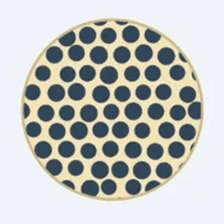
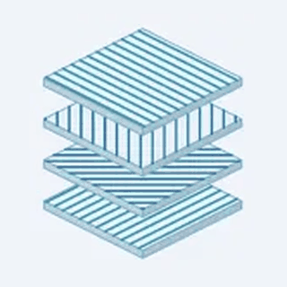
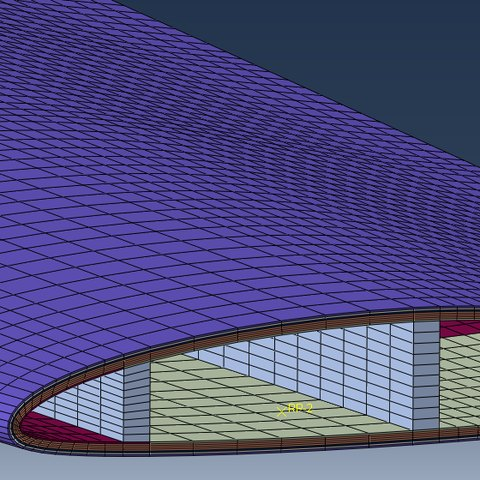
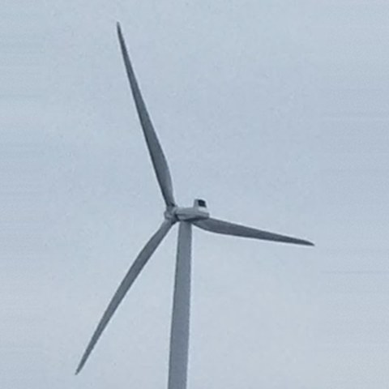
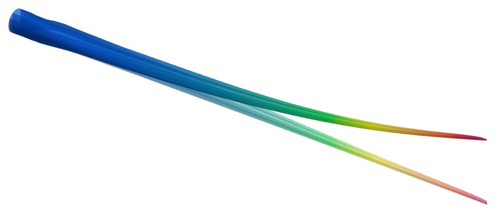
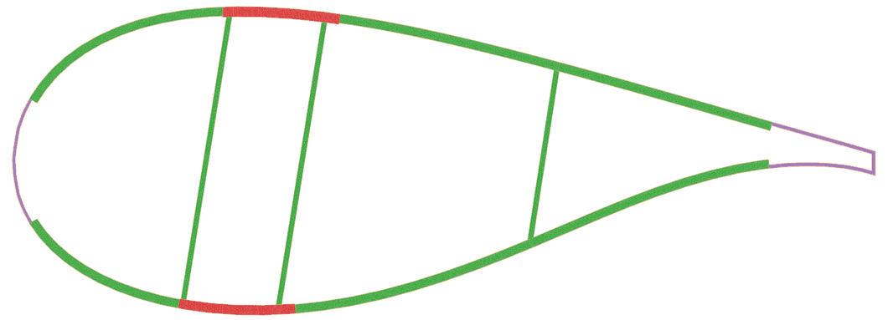
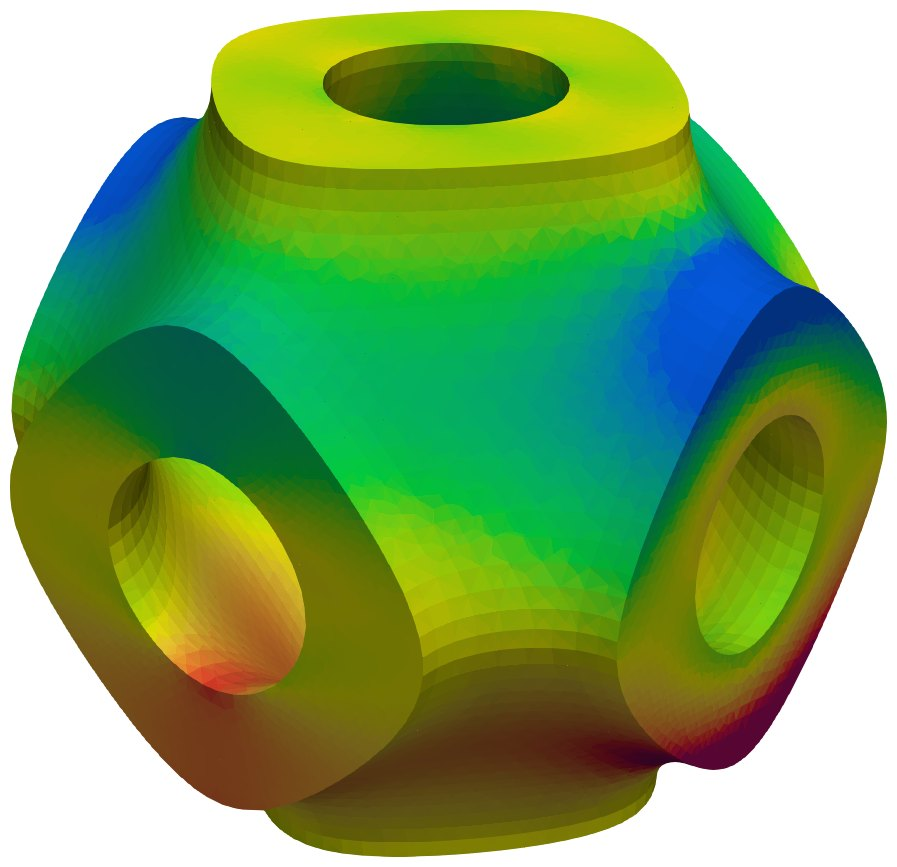
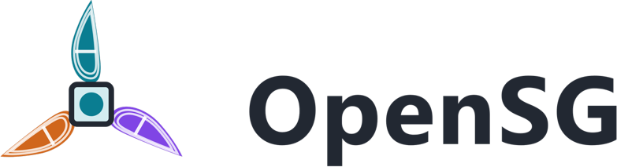

I build OpenSG, an open-source multiscale modeling code for composite structures, and the AI agents that run it.
Ph.D. candidate in Aerospace Engineering at Purdue University, graduating in Spring 2027. I am looking for R&D roles in simulation software and AI for engineering, in industry or at national laboratories.
faster than a full 3-D simulation when Claude agents ran a lattice sandwich plate through OpenSG and Abaqus, with matching stresses.
Full 3-D simulation5.4 h
Agent run with OpenSG12 min
100+
AI agents I coordinated for 24 hours to solve a 50-year-old composites problem with Prof. R. Byron Pipes.
OpenSG
Open-source multiscale modeling code I built 2023 – present
OpenSG is a general-purpose, GPU-enabled multiscale modeling code. It works out how stiff a composite structure is from what it is made of, and then the stress inside every layer.
It builds beam, plate, shell and solid models for parts as different as wind turbine blades and 3-D printed lattice panels, so engineers can run a fast model of the whole structure without losing the detail inside it.

Fibers
Stiff glass or carbon fibers held in resin

Layers
Stacked in thin layers at chosen angles

Blade section
A hollow ring of thin walls

Whole turbine
The largest blades are longer than a football field
OpenSG boils each level down to the few stiffness numbers a designer needs.
It also works in reverse, from the forces on the whole blade to the stress in every layer.
I wrote version 1 in FEniCSx for a Sandia National Laboratories and U.S. Department of Energy project with NREL. For an NSF project with UT Arlington and the Air Force Research Laboratory, I rebuilt it in JAX to run on GPUs. Version 2 gives exact derivatives of every result for design optimization, and on large models it runs 5 times faster than the commercial code SwiftComp.

The 138 m IEA 22 MW blade as a fast beam model, built from the properties OpenSG computed for 51 of its cross-sections at about a minute each. Under a uniform load, its tip moves about 18 meters.
Purdue University, with AnalySwift May 2026 – present
OpenSG now plugs into CompositesAI, AnalySwift's platform for composite design. Agents call it through skills I built and trained them with.
Each skill runs one step of an OpenSG analysis, from meshing a part to computing its stiffness and stresses, through tested scripts that do the same thing every time. Agents now run OpenSG from start to finish. They write its input files, run optimization studies, post-process the results and train machine learning models with its exact gradients. I also packaged CompositesAI as a Claude Code plugin.
OpenSG was first built to model wind turbine blades. The agent run below redesigns one.
One of my agent runs
TaskSwap the carbon spar caps of the 138 m IEA 22 MW wind blade for glass at four stations, and resize the glass caps so the blade stays as stiff in bending.
Model the carbon baseline at four stations
Resize the glass caps to the same bending stiffness
Review CompositesAI's results
Write the summary table and a recommendation
Result: bending stiffness held within 1% at all four stations, with the change in mass reported for each. Claude led the run, and CompositesAI did the analysis with my OpenSG skills.

A cross-section of the blade. The red segments are its carbon spar caps.

Stress inside one lattice cell, recovered by OpenSG after Abaqus solved the plate.
A lattice sandwich plate, analyzed by agents
Claude planned the work and handed it out. CompositesAI built the lattice cell and used OpenSG to turn it into a plate model, Abaqus solved the plate, and OpenSG then recovered the 3-D stresses inside the lattice.
The stresses and vibration frequencies match a full 3-D simulation of the plate, and the whole run took 12 minutes instead of 5.4 hours.
New derivations
I also point agent teams at open research questions. Led by the CompositesAI agent, Claude subagents derived an exact solution for the stresses at the free edge of cross-ply laminates and an analytical formula for the through-thickness shear stiffness of general sandwich laminates.
Keeping agents reliable
Each agent gets one small, specific task.
Verifier agents check every result against physical limits, such as a stiffness that can never be negative.
A hook flags any agent that runs longer than 15 minutes and has it explain to me what it is doing.
When a skill built a wrong, unsymmetric laminate mesh, I traced the bug to the script its prompt called and fixed it.
In use
My skills are used at the University of Akron and in Purdue graduate structures courses.
Students in an AI/ML course used them for their research, and I updated the skills from their feedback.
When users asked to start from CAD models, I added a skill that goes from CAD geometry to stiffness, and I replaced static stress plots with clearer 3-D renders.
I gave workshops on CompositesAI agents at Purdue's Composites Manufacturing and Simulation Center and in AAE 590, and wrote 10 OpenSG tutorials and prompts.
Experience
From composite aircraft parts to AI agents that help design them.

AI Agent Developer
Purdue University, with AnalySwift
May 2026 – present
Agents and skills that run OpenSG on the CompositesAI platform.
I work with Prof. Wenbin Yu at Purdue's Composites Manufacturing and Simulation Center, and I have been a teaching assistant for courses on aircraft structures, composite materials and aeromechanics. Before Purdue, I earned an M.Tech. in Aerospace Engineering at IIT Kanpur and a B.Tech. in Mechanical Engineering at G. B. Pant University.